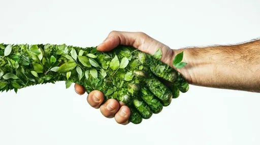

marcher avec style tous en respectant la planete avec bonpied
votre destination de sneakers éco-sourcés à Rennes
découvrer notre collection
citadine
sportive
nouveauté
Adoptez le style classique avec nos sneakers éco-sourcés. Conçues avec des matériaux recyclés, elles allient confort, durabilité et élégance.
Affirmez votre style urbain avec nos sneakers tendance. Des designs modernes fabriqués de manière éthique pour une empreinte écologique réduite
Optez pour le confort ultime avec nos sneakers légères. Fabriquées avec des matériaux respirants, elles sont idéales pour une utilisation quotidienne.
Sneakers Hautes Performance
Atteignez de nouveaux sommets avec nos sneakers hautes performances. Conçues pour offrir un soutien optimal tout en respectant l'environnement.
Sneakers Vintage Éco-sourcées
Retrouvez le charme du vintage avec nos sneakers éco-sourcées. Des modèles rétro repensés avec des matériaux respectueux de l'environnement
Personnalisez vos sneakers pour un style unique. Choisissez vos couleurs, motifs et matériaux préférés pour des chaussures qui reflètent votre personnalité.
Événements Responsables
"Sneakers éco-sourcés fabriquées avec des matériaux durables", "Designs tendance pour un style unique", "Engagement envers la durabilité et la responsabilité sociale"
Rejoignez-nous lors de nos événements responsables. Des initiatives locales pour sensibiliser à la durabilité et promouvoir un mode de vie éco-conscient.
